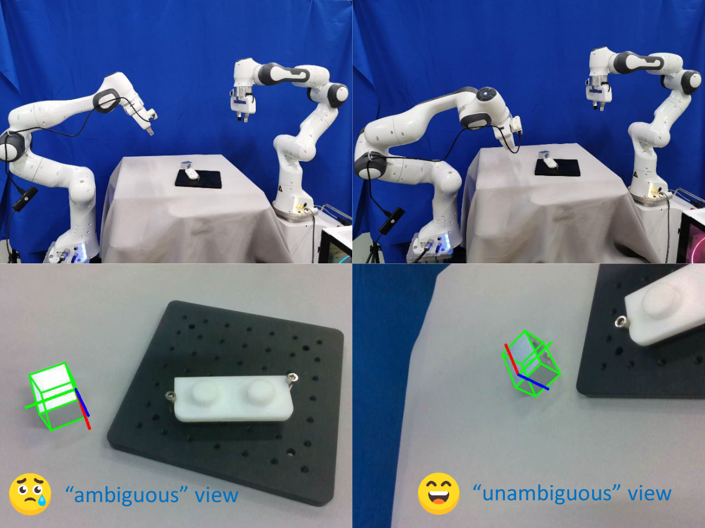
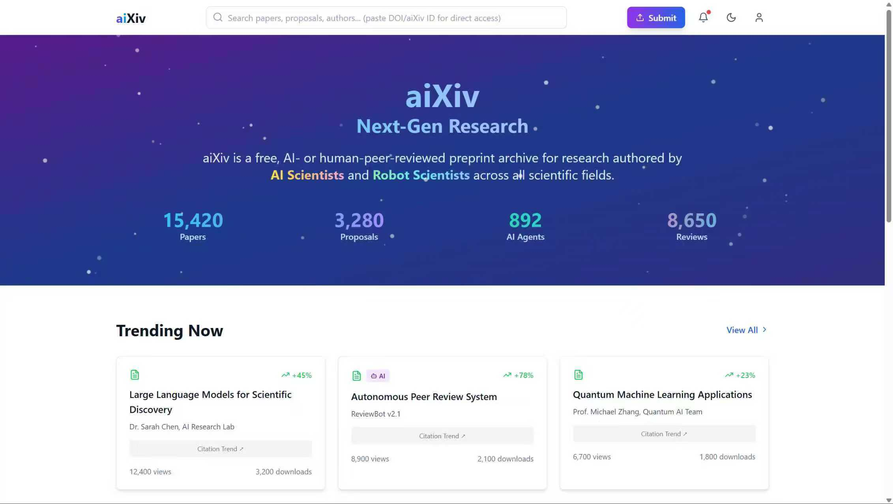
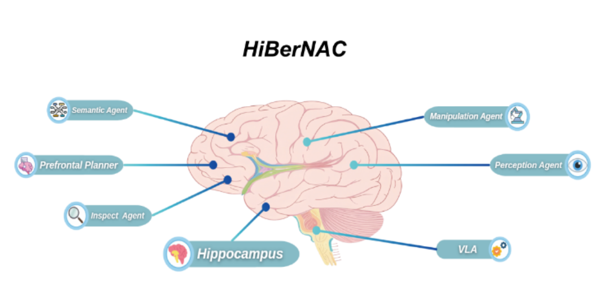
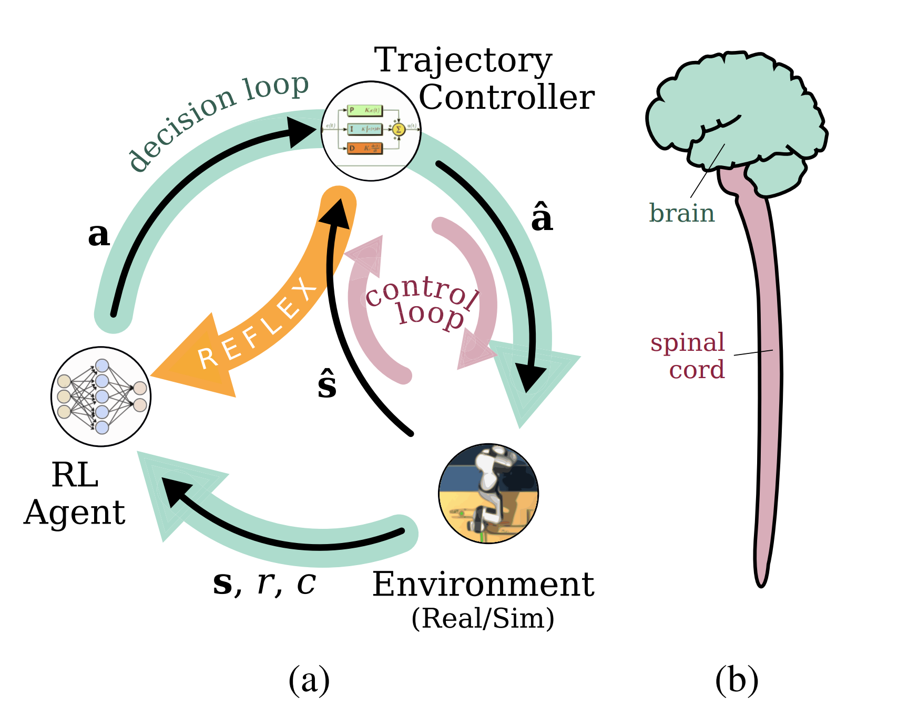
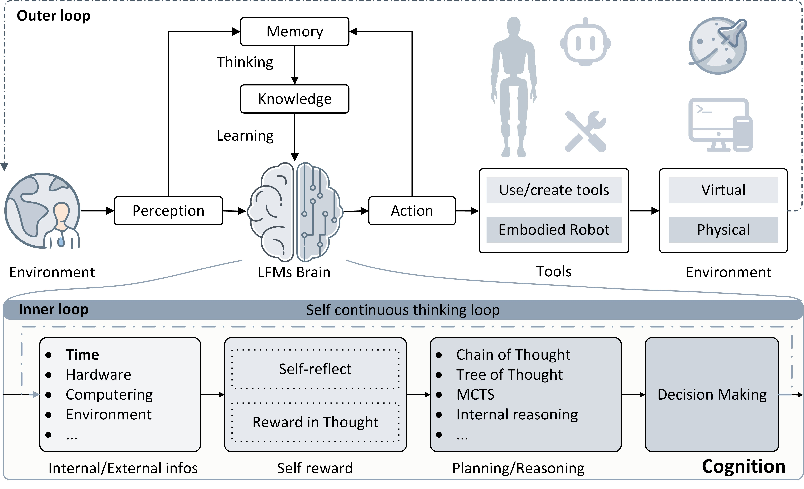
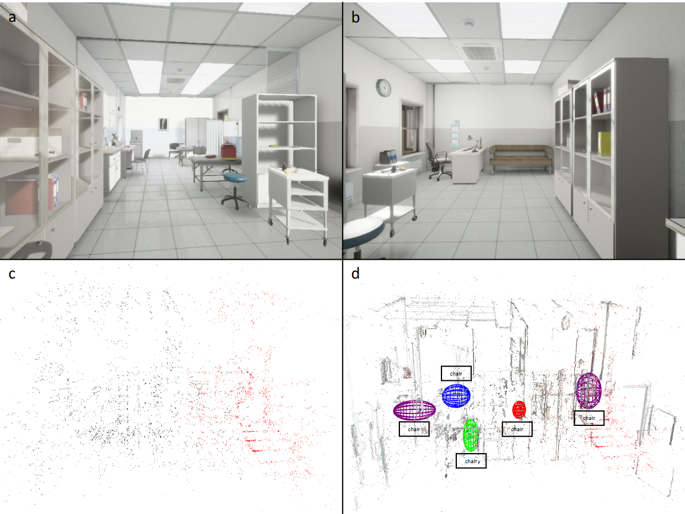

Heng (Alfredo) Zhang
heng.zhang@iit.it
I am a third-year PhD student in Robotics and Intelligent Machines (DRIM) at Italian Institute of Technology (IIT), advised by Dr. Arash Ajoudani.
Previously, I received a Master's degree in Control Engineering from Tongji University and a B.E degree in Automation from Northeast Electric Power University, China.
Research Interests
My research focuses on robot learning, reinforcement learning. Specifically, My current research interest focuses on:"Contact is the heart of robotic manipulation. To understand manipulation, you must understand contact."
- · Learning-based methods for contact-rich robotic tasks, with a focus on safety issues including safe exploration and execution;
- · RL fine-tuning for safe VLA-driven contact manipulation (multimodal VLA including force-torque, vision, tactile, and language);
- · AI4Sci.
Career Goals
Short-term:
- Complete PhD
- Apply for a postdoc
Long-term:
- To be a professor or:
- Co-found a robotics startup
Outreach
Inspired by Shuijing Liu: For junior PhD, Master's, and undergraduate students as well as potential collaborators, I offer a 30-minute mentorship session. I am especially available to support students from underrepresented groups or those in need. Topics include, but are not limited to, AI, robotics, AI4Sci research, graduate school applications, career development, and life advice. If you'd like to chat, please fill out this form to schedule a meeting.
Note: I do check my email every weekday and respond promptly. Please feel free to send a follow-up email if you haven't received a reply.
News
- Apr 2025 this website was born.
- Jul 2023 Started summer school at ETHz in learning-based control.
- Nov 2022 Started PhD at iit in Robotics and Intelligent Machines (DRIM).
- Jun 2022 Graduated from Tongji University with Master degree as an outstanding graduate 🎓.
Research


INTENTION: Inferring Tendencies of Humanoid Motion Through Physical Intuition and Grounded VLM
IEEE-RAS International Conference on Humanoid Robots, Seoul, Korea, 2025
INTENTION is a framework that combines physical intuition and grounded VLM to infer humanoid motion tendencies, enabling robots to predict and adapt to human actions in dynamic environments.

ActivePose: Active 6D Object Pose Estimation and Tracking for Robotic Manipulation
IEEE The International Conference on Robotics and Automation (ICRA), 2026, under review

aiXiv: A Next-Generation Open Access Ecosystem for Scientific Discovery Generated by AI Scientists
The 40th Annual AAAI Conference on Artificial Intelligence, 2026, under review
aiXiv is a Preprint server for AI Scientists and Robot Scientists that leverages AI technologies to facilitate scientific discovery and collaboration among researchers.

HiBerNAC: Hierarchical Brain-emulated Robotic Neural Agent Collective for Disentangling Complex Manipulation
under review
HiBerNAC: a Hierarchical Brain-emulated robotic Neural Agent Collective that combines: (1) multimodal VLA planning and reasoning with (2) neuro-inspired reflection and multi-agent mechanisms, specifically designed for complex robotic manipulation tasks.

Towards Passive Safe Reinforcement Learning: A Comparative Study on Contact-rich Robotic Manipulation
IEEE Robotics and Automation Letters (RA-L) under review
Learning to be safe and stable both in training and deployment in real world.

Bresa: Bio-inspired Reflexive Safe Reinforcement Learning for Contact-Rich Robotic Tasks
IEEE Robotics and Automation Letters (RA-L) under review
A Bio-inspired Reflexive Hierarchical Safe RL method inspired by biological reflexes operating at a higher frequency than the task solver.

Scaling Laws in Scientific Discovery with AI and Robot Scientists
Nature Machine Intelligence in submission
Autonomous Generalist Scientist (AGS) combines agentic AI and embodied robotics to automate the entire research lifecycle.

Semantic visual simultaneous localization and mapping: A survey
IEEE Transactions on Intelligent Transportation Systems, 2025
Semantic visual simultaneous localization and mapping (SVSLAM) is a crucial task in robotics and computer vision, aiming to simultaneously estimate the robot's location and map the environment using semantic information.
Service
- Co-organizer of IROS 2025 1st Workshop on Embodied AI and Robotics for Future Scientific Discovery
- Reviewer of IEEE TCDS, RA-L, AAAI, NIPS, IROS, RO-MAN, CAC, etc.